- Цікавий факт: Іспанія – одна з найпопулярніших країн у світі! Щорічно її відвідує понад 60 млн. туристів, які витрачають понад $55 млрд. За цим показником країна займає 2 місце після Франції.
- Мадрид – столиця Іспанії. Населення міста становить майже 3.3 млн. людей. Мадрид – головний торговий і економічний центр країни. Також він є одним із найбільших транспортних вузлів Західної Європи з найважливішими автомагістралями і аеропортами.
- Цікавий факт: футбол є національним видом спорту Іспанії. Реал Мадрид і ФК Барселона – всесвітньо відомі клуби, володарі найбільш престижних футбольних клубних нагород. Збірна Іспанії є чемпіоном світу 2010 року, а також чемпіоном Європи 2008 і 2012 року. Цікаво знати, що вона є єдиною у світі командою, яка поспіль виграла 3 головних футбольних турніри. Збірна Іспанії – перша команда, яка захистила свій титул чемпіона Європи.
- Цікавий факт про Іспанію: на даний момент у світі налічується 44 іспаномовних країни. Більше 100 млн. людей вивчають іспанську як другу іноземну.
- Кольори іспанського прапора символізують саме головні місцеві розваги — кориду. Жовтий колір на ньому означає пісок, а червоний — колір крові. Хоча за легендою Цар Іспанії, коли вибирав собі прапор, побачив золоте полотно. Він вмочив два пальця в кров тварин і провів по цьому полотну....
- Свято «Томатина» виникло в 1945 році, коли двоє друзів посварилися на вулиці міста Буньоль і почали кидатися помідорами. Видовище було настільки яскравим, що місцеві жителі вирішили перетворити його в яскраву традицію
- Світовим лідером за кількістю вихідних і свят є Іспанія. Відпочивати тут люблять і вміють
- Відпочинок круглий рік. В Іспанії можна відпочивати на морі цілий рік: влітку на узбережжі або на Балеарських островах, а взимку на Канарських островах. До того ж клімат на Канарах дуже стабільний. Середньорічна температура +20 без сильної спеки навіть в розпал літа, вода тепла за будь-якого сезону.На північ країни (від Галісії до Каталонії) значно впливає Атлантичний океан: тут м'яка волога зима і помірно тепле літо. А на південно-східнму узбережжі (Андалусія і Естремадура) - середземноморський клімат з дуже м'якою короткою зимою і сухим жарким літом.
- Зручний транспорт. Іспанія - дуже зручна для мандрівників країна. У кожному більш-менш великому місті для зручності туристів є спеціальні туристичні автобуси. Купивши квиток, ви зможете протягом одного-двох днів користуватися автобусами скільки завгодно.Мережа зупинок подібних туристичних автобусів охоплює основні пам'ятки міста, дозволяючи неспішно оглянути практично все місто. Крім того, не так давно в Іспанії з'явився і спеціальний туристичний поїзд - Expreso de la Robla.
- Доброзичливі іспанці. В Іспанії может бути багато проблем, але чого ви не побачите, так це зневажливого ставлення до туристів. Тут вас не будуть хапати за руки, пропонуючи черговий сувенір з Китаю або послуги екскурсовода. Навпаки, вам з радістю допоможуть та ще й на обід запросять.
- Шопінг. Іспанія - один зі світових центрів шопінгу. В країні безліч магазинів відомих марок, регулярно проводяться тижні моди, а у великих містах ви можете знайти масу аутлетів, іноді навіть виділених в окремі "шоп-села".Якщо ви хочете придбати в подарунок сувенір з Іспанії, то краще за знамениті сири, вина, хамон і різні сувеніри-символи країни (віяла, спідниці, туфлі для фламенко) - не придумаєш. Іспанські майстрині створюють дивовижні мережива, а також роблять майстерну вишивку по шовку. Ще з країни варто прихопити пляшку хересу, сангрії або мальвазії.
- Смачна європейська кухня. Національна кухня Іспанії - це поняття абстрактне. В країні велика кількість кухонь різних регіонів, кожна з яких має свої особливості.Найвідоміше іспанське блюдо - паелья (рис з морепродуктами), також варто спробувати хамон - сиров'ялену свинину. Дуже поширені страви з риби і морепродуктів. З алкоголю в Іспанії популярні каталонські білі вина "Пенедес" і "Ампурдан". Херес з міста Херес-де-ла-Фронтера на південному заході Андалусії вважається гордістю країни, а на канарському острові Лансароте роблять хороше напівсолодке вино "Мальвазія".
- Архітектура та історія. Іспанія - багата на пам'ятки країна. А екскурсійні тури проводяться тут цілий рік. Якщо ви людина допитливий, то ця країна стане однією з ваших улюблених для відпочинку і подорожі.
- Більше інформації
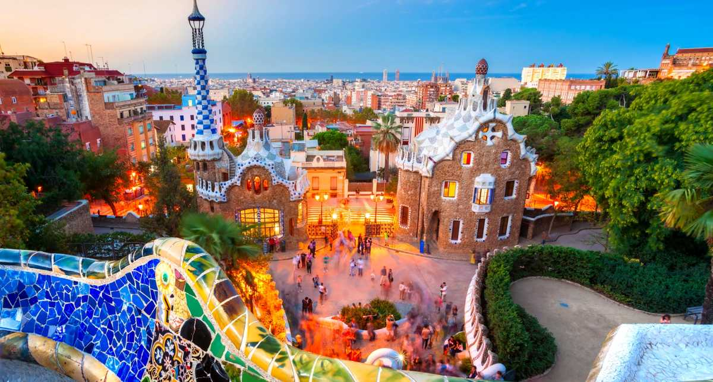
 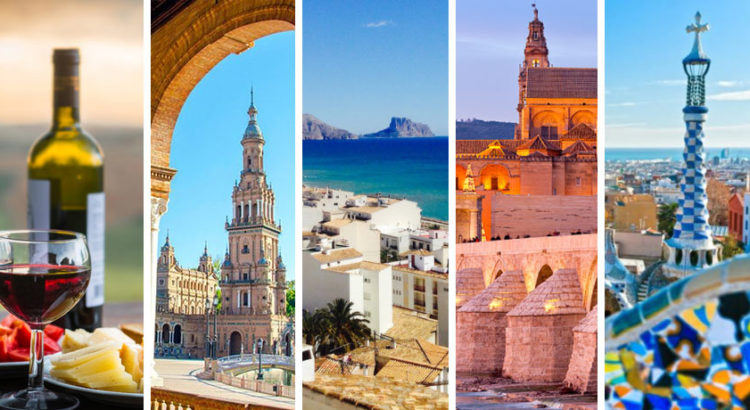
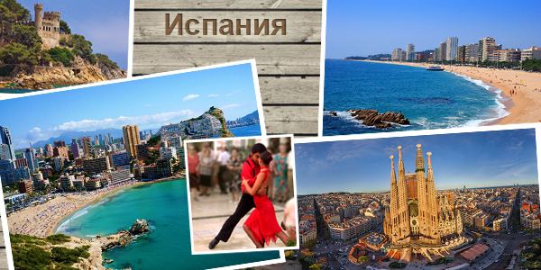
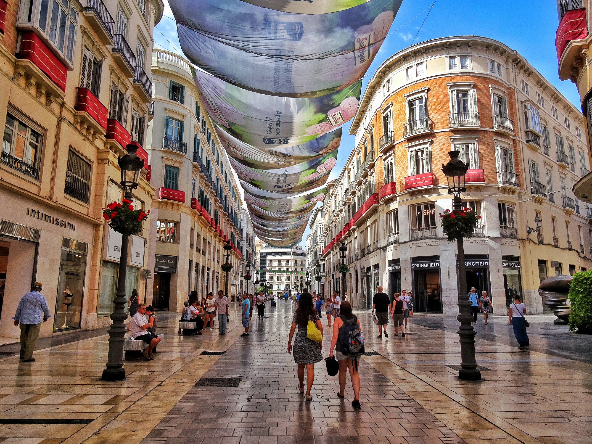
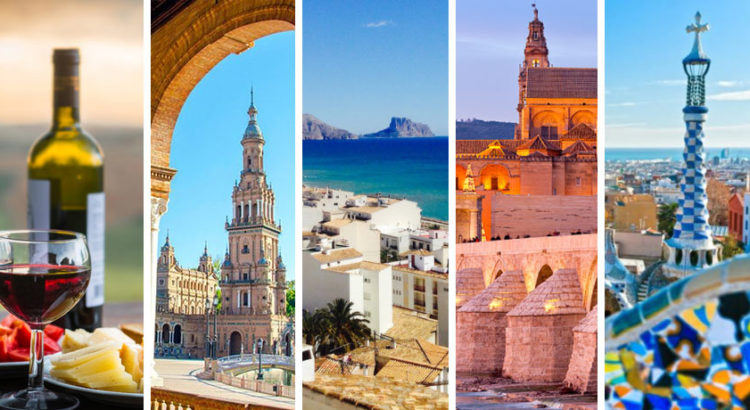
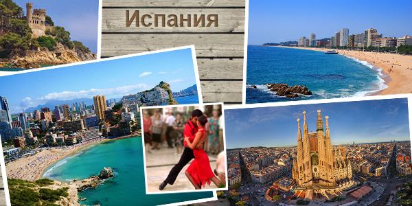
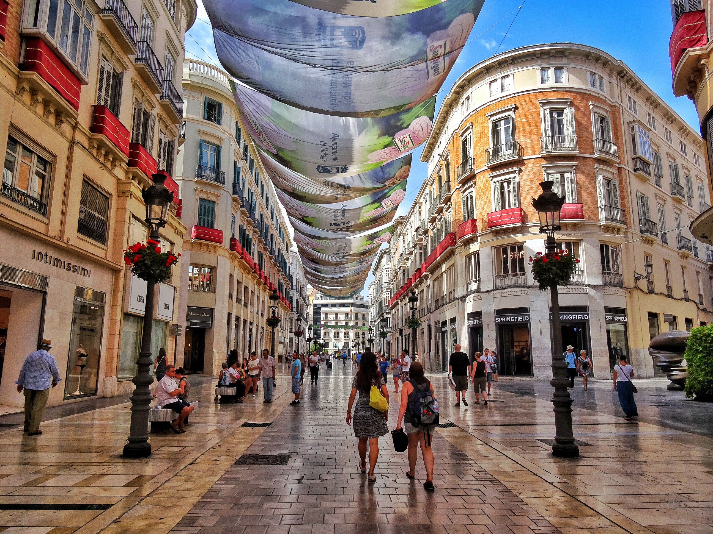
 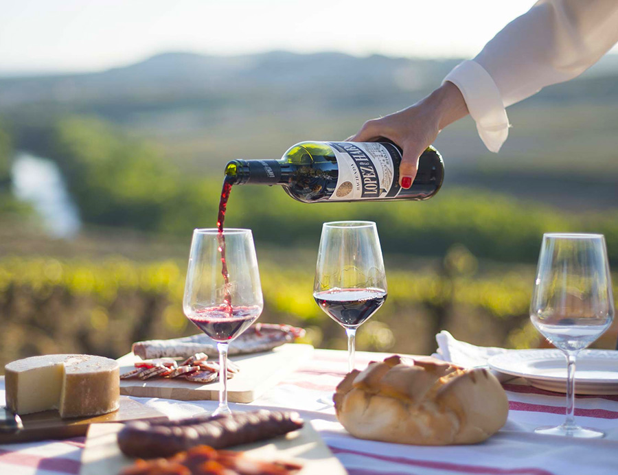
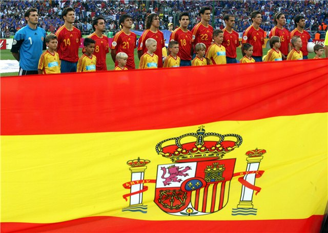
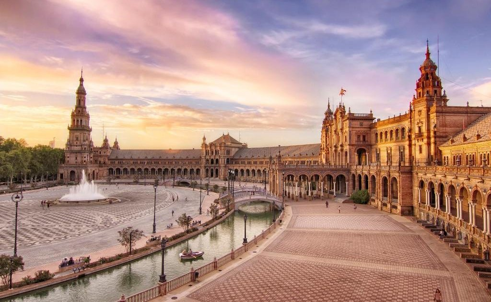
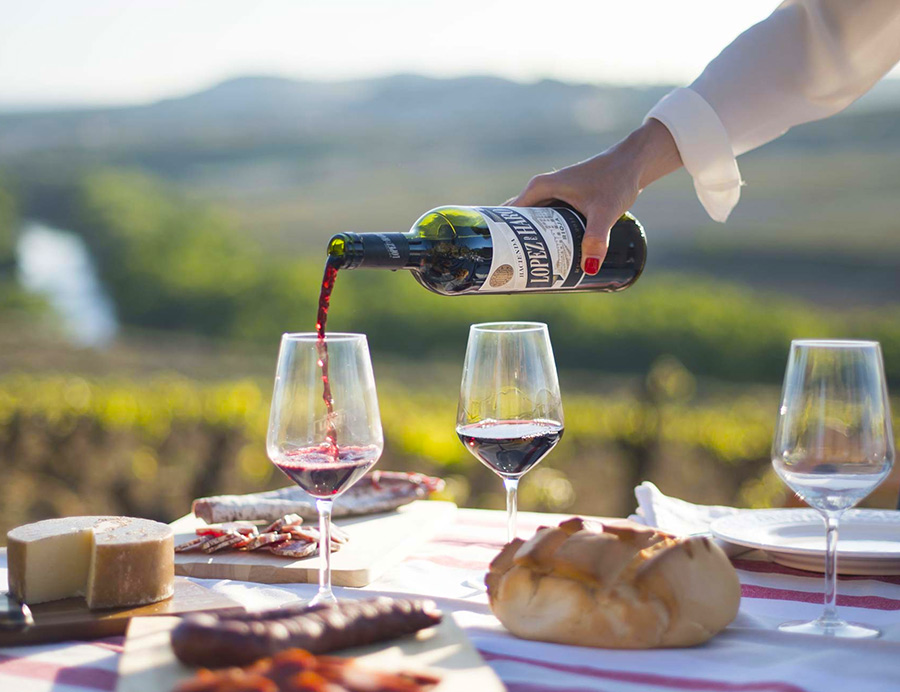
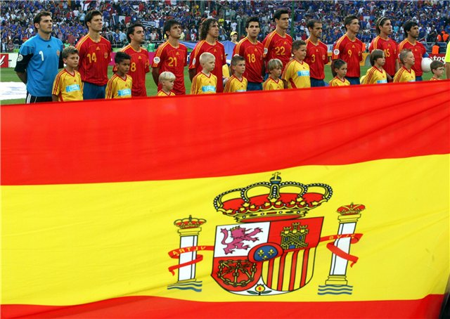
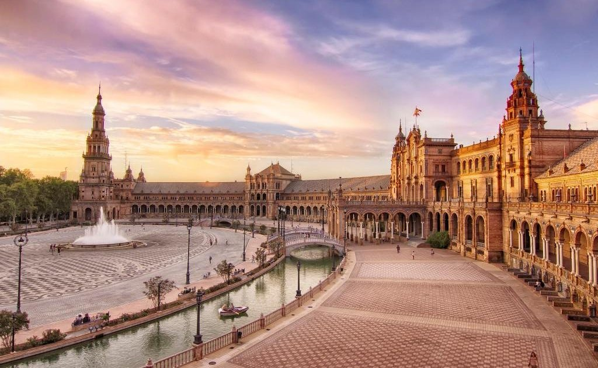
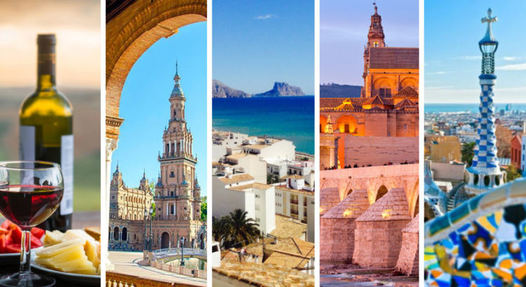
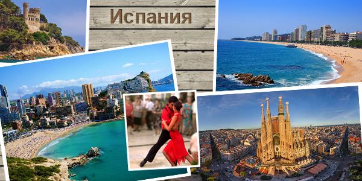
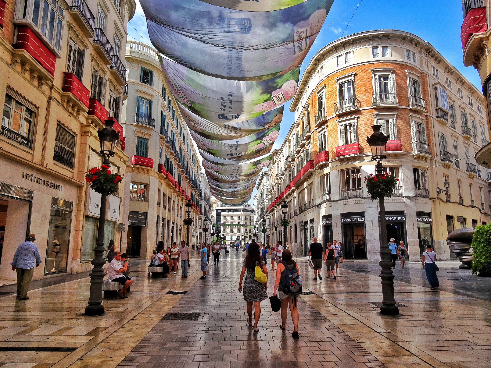
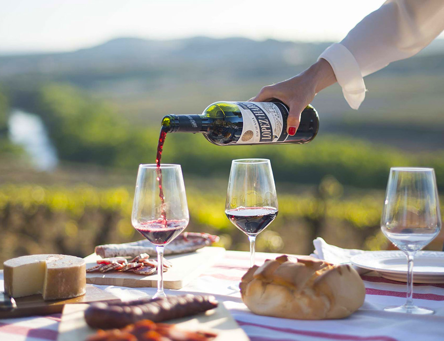
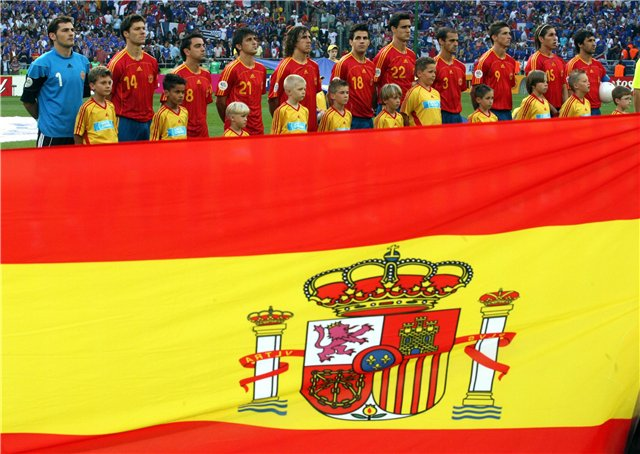
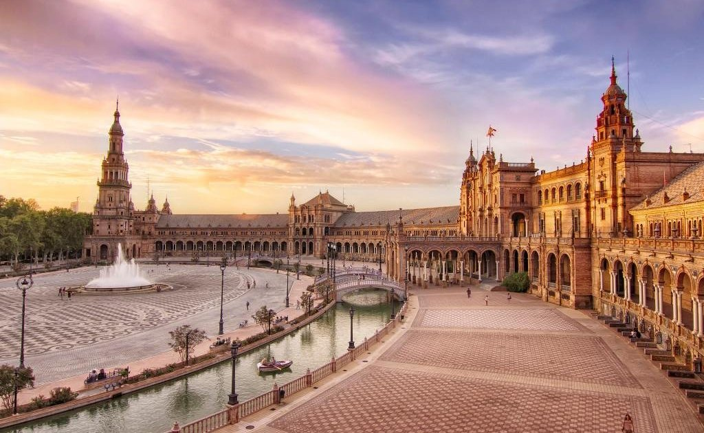